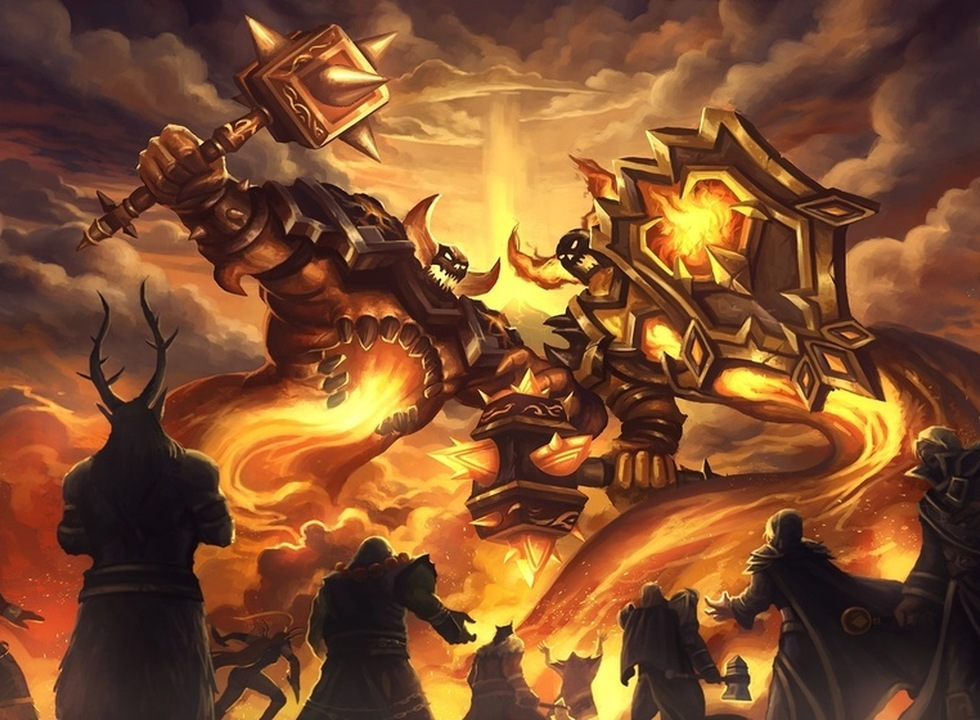
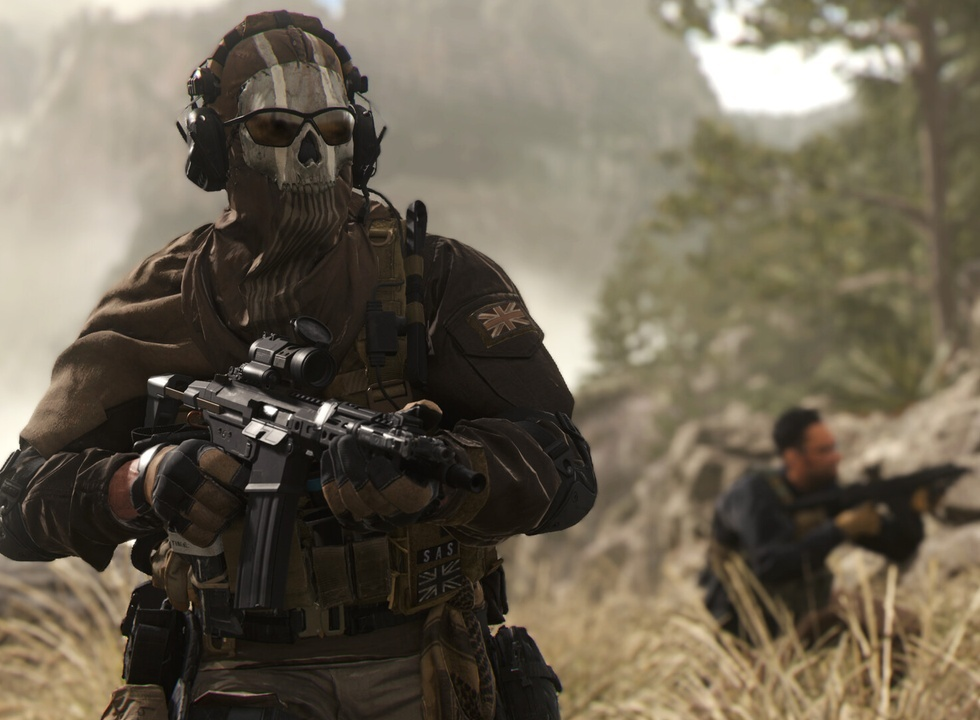
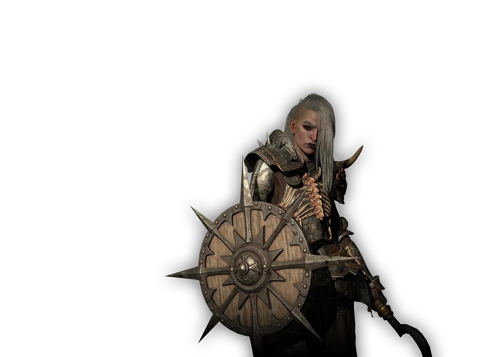
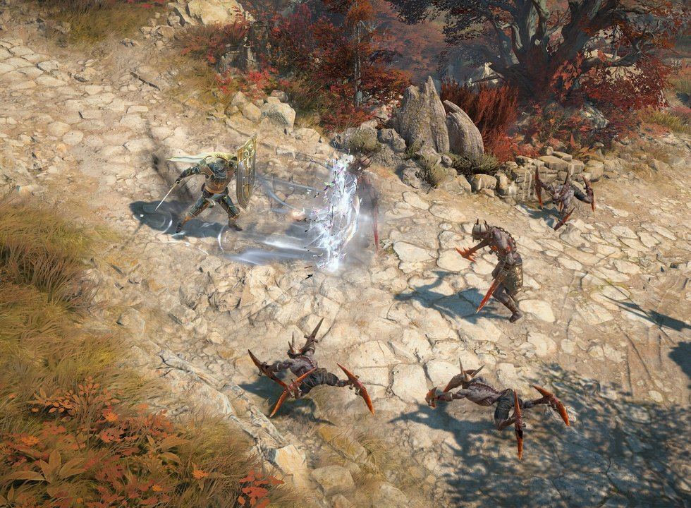

战网变“启动器”？2027 年 PC 玩家能否直接
战网要“变身”了？这事儿最近在玩家圈子里传得挺凶。Windows Central的记者杰兹·科登聊微软游戏业务时，透露了一点风声，暗示暴雪可能会在9月的嘉年华上官宣战网2027年的重大规划。话说得挺玄乎，只说自己听到了些“有趣的内容”，具体是啥死活不剧透，就让大伙多盯着战网的后续动作。这感觉，就像追更小说看到关键处突然没了，心里挠得慌。

说起来，今年暴雪嘉年华定在9月12日至13日，地点还是老地方美国安纳海姆会议中心。这次展会的分量不轻，是动视暴雪被微软收入麾下后，嘉年华头一回以大型线下活动的样子回归。想到能在现场挤在人堆里看《魔兽世界》新资料片预告，或者亲手试玩《暗黑破坏神》新内容，甚至看看《守望先锋》还能整出什么花活，不期待肯定是假的。但比新皮肤新副本更让人在意的，是科登嘴里那个关于“战网”本身的秘密。

作为一个从《魔兽争霸》混乱之治和冰封王座时代一路走来的老玩家，战网这个启动器真是让人又爱又恨。1996年它刚出来那会儿，能和朋友联机打对战，那是革命性的体验。快三十年了，它现在是暴雪全家桶和部分动视游戏（比如《使命召唤》）的PC大本营。但说句真心话，这平台这几年除了整合游戏，功能上真没啥让人眼前一亮的变化。每次打开，除了看看好友谁在线，感觉就是个高级点的游戏图标展示架。

科登这谜语人当的，给了大伙不少瞎想的空间。我自己琢磨，加上看社区老哥们的讨论，可能性比较大的方向有这么几个。首先就是和Xbox Game Pass的深度捆绑，这概率很大。微软可是花了690亿美元真金白银把动视暴雪抱回家的，不是让它接着当“独立王国”的。最可能的情况，就是到2027年，PC Game Pass的订阅用户能直接通过战网开玩《暗黑破坏神4》和《守望先锋2》，不用再掏钱买一份。真要是这样，战网的定位就彻底变了，成了给Game Pass开门的“启动器”，你要说心里没点落差那是假的，毕竟以前它可是暴雪大本营。

这事儿要是成了，对国内玩家来说挺微妙的。一方面，如果PGP能无缝衔接战网，那玩游戏的入门成本确实降了一大截，特别是对于想尝鲜《暗黑4》新赛季或者《守望2》新英雄的朋友，几百块的本体能省下来，谁跟钱过不去呢。但另一方面，国内这网络环境，战网时不时抽风，再加个XGP的验证，万一负负得正彻底连不上，那可太折磨人了。而且战网真要成了启动器，总感觉少了点暴雪游戏那种“家”的感觉，有点不是滋味。
当然，也不排除暴雪想玩点大的。比如对平台UI/UX来一次彻底的重构，让界面看着更现代，社交功能更强点，别搞得像个古董。另外还有个更野的传闻，说要搞个类似Steam Deck的“战网掌机”，专门跑暴雪游戏。不过这纯属玩家间的脑补，一点实锤都没有。毕竟以暴雪的优化功底，做个掌机跑《暗黑4》，怕是风扇转得比直升机还响，续航撑不过一趟副本。但话说回来，如果真能有个优化好的移动端设备玩《魔兽世界》日常任务，好像也挺带感？这事儿估计就跟“守望2”的PvE一样，听听就好。
说到底，微软和暴雪这步棋怎么走，大概率还是得落到“生意”二字上。690亿美元的成本摆在那，微软肯定想把战网的流量和Game Pass的订阅制打通，实现“1+1>2”的效果。从玩家角度看，我们当然希望整合能带来实惠和便利，而不是又一场“为了你好”的折腾。只希望暴雪在9月的嘉年华上，能少卖关子，多拿出点真东西来。别到时候期待了半天，最后公布的只是一个换皮的启动器皮肤，那可真就辜负了这波预热了。最理想的状态，是既保留了战网的纯粹，又能享受到XGP的福利，但看微软这商业逻辑，大概率是“我全都要”了。
关于我们
📱 公众号名称：三天游戏
✍️ 作者：曾三天
扫码关注公众号，获取每日最新资讯

商务合作与版权
商务合作 / 内容投稿 / 品牌推广
请关注公众号「三天游戏」后台留言联系
版权声明：本文由作者整理，转载需注明出处。